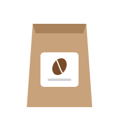

Как выбрать степень обжарки
Светлая, средняя или темная: что меняется во вкусе и для какого способа подходит.

Зеленое кофейное зерно почти не пахнет кофе. Аромат и вкус появляются при обжарке, когда в зерне идут реакции сахаров и аминокислот. От того, насколько долго и сильно обжарено зерно, зависит, каким получится напиток.
Светлая обжарка
Зерно светло-коричневое и матовое. Сохраняется вкус происхождения: фрукты, ягоды, цветы и яркая кислотность. Лучше всего раскрывается в пуровере, кемексе и аэропрессе.
Средняя обжарка
Цвет молочного шоколада. Кислотность мягче, появляются карамель, орех и шоколад. Универсальный вариант: подходит и для фильтра, и для эспрессо.
Темная обжарка
Зерно темное, иногда с маслянистым блеском. Вкус горький, с нотами какао, специй и дыма; особенности сорта почти не слышны. Подходит для турки, гейзерной кофеварки и напитков с молоком.
Свежесть
После обжарки зерно выделяет углекислый газ. Кофе лучше заваривать не раньше чем через 3-5 дней после обжарки и выпить в течение месяца. Храните пачку закрытой, в темном прохладном месте, но не в холодильнике.